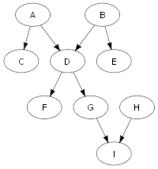
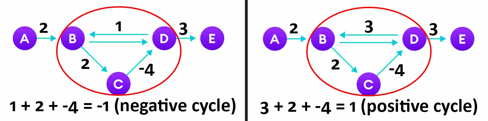

Updated ( 2021-04-05 )
MySite> Computer Science> Data Structures
- recursive function that never fills the call stack
- each recursive call has its own internal state, this way no call stack is needed
- a data structure is a way to store data on the computer
- an Object in programming represents something like a car person etc...
- the Class is a prototype 'bluepirnt', a model from whic we create objects
- the Constructor creates object based on a Class
- sequentially stored items in memory, array items are indexed therefore they are fast to access
- arrays cannot be scaled because how the computer memory works, so if we want to scale an array we have to allocate a new array then copy items from the old to the new array
- the linked-list is an Array-like linear data structure where each element has a pointer to the next element
- linked-lists are easily scalable but accessing its elements are slow because we have to go throw all elements from the head
- Singly Linked List = each node contain one pointer to the next node (one-way structure)
- Doubly Linked List = each node contain two pointers one for the next node one for the previous node
- Circular Linked List = the last node points to the first node (circular)
'use strict';
var lList = { // this is how the linked list architecture could be implemented in JavaScript
data: 'head',
next: {
data: 'node-1',
next: {
data: 'node-2',
next: null
}
}
}
class LinkedList{ // implements linked-list architecture
constructor(headData){ // instance created with the 'head' node
this.data = headData;
this.next = null;
}
add(data){
let nodes = this.length()
let ref = 'this.next';
for(let i = 0; i < nodes - 1; i++){
ref += '.next';
}
eval(ref + '= {data:data, next:null}');
}
length(){
let ref = 'this.next';
let count = 1;
while (eval(ref)) {
ref += '.next';
count++
}
return count
}
clear(){
this.data = null;
this.next = null;
}
get(index = 0){
if (index >= this.length()) return 'out of range!';
let ref = 'this';
for(let i = 0; i < index; i++){
ref += '.next';
}
return eval(ref + '.data');
}
}
var myList = new LinkedList('head'); // linked-list instance when created (head node)
myList.add('node-1'); // adding additional nodes
myList.add('node-2');
console.log( myList.length() ); // -> 3 // linked-list has 3 nodes
console.log( myList.get(1) ); // -> 'node-1' // data of the 2nd node (1st index)
console.log( myList ); // -> {data:'head', next:{data:'node-1',next:{data:'node-2', next:null}}}
// this is who the linked-list looks like currently
myList.clear(); // crears the whole list
console.log( myList.length() ); // -> 1 // the 'head' node never removed
console.log( myList.get(0) ); // -> null // but but has no data after the list was cleared
console.log( myList ); // -> {data:null, next:null}
var linkedList = {
head: {
data: 'head',
next: {
data: 'node-1',
next: {
data: 'node-2',
next: {
data: 'node-3',
next: null
}
}
}
}
}
console.log( linkedList.head.next.data ); // -> 'node-1'
console.log( linkedList.head.next.next.next.data ); // -> 'node-3'
class Node{
constructor(data, next){
this.data = data;
this.next = next;
}
}
var node3 = new Node('node-3', null);
var node2 = new Node('node-2', node3);
var node1 = new Node('node-1', node2);
var head = new Node('head', node1);
console.log( head.data ); // -> 'head'
console.log( head.next.next.data ); // -> 'node-2'
'use strict';
var lList = { // this is how the linked list architecture could be implemented in JavaScript
data: 'head',
next: {
data: 'node-1',
next: {
data: 'node-2',
next: null
}
}
}
class LinkedList{ // implements linked-list architecture
constructor(headData){ // instance created with the 'head' node
this.data = headData;
this.next = null;
}
add(data){
let nodes = this.length()
let ref = 'this.next';
for(let i = 0; i < nodes - 1; i++){
ref += '.next';
}
eval(ref + '= {data:data, next:null}');
}
length(){
let ref = 'this.next';
let count = 1;
while (eval(ref)) {
ref += '.next';
count++
}
return count
}
clear(){
this.data = null;
this.next = null;
}
get(index = 0){
if (index >= this.length()) return 'out of range!';
let ref = 'this';
for(let i = 0; i < index; i++){
ref += '.next';
}
return eval(ref + '.data');
}
}
var myList = new LinkedList('head'); // linked-list instance when created (head node)
myList.add('node-1'); // adding additional nodes
myList.add('node-2');
console.log( myList.length() ); // -> 3 // linked-list has 3 nodes
console.log( myList.get(1) ); // -> 'node-1' // data of the 2nd node (1st index)
console.log( myList ); // -> {data:'head', next:{data:'node-1',next:{data:'node-2', next:null}}}
// this is who the linked-list looks like currently
myList.clear(); // crears the whole list
console.log( myList.length() ); // -> 1 // the 'head' node never removed
console.log( myList.get(0) ); // -> null // but but has no data after the list was cleared
console.log( myList ); // -> {data:null, next:null}
- all these data structures store their items in an array, but the way we access items where things differ
- Stack (LiFo = Last in First out) the most recently added item gets out first
- Queue (FiFo = First in First out) the first item gets out first (item which is at the begining of the queue)
- Deque combines Stack and Queue itmes are accessible on both side of the Deque
- the Priority Queue is a normal queue where the elements have some kind of priority when they are returned (ex: a Heap is a priority queue)
'use strict';
class Stack extends Array{
add(data){
this[this.length] = data;
}
get(){
return this[this.length - 1];
}
clear(){
let length = this.length;
for(let i = 0; i < length; i++){
this.pop();
}
return length;
}
}
var myStack = new Stack(); // stack created
myStack.add(21); // adding new elements to the stack
myStack.add(true); // any data type can be added to the stack (this is JavaScript baby :)
myStack.add({p1:'someVal'});
myStack.get(); // -> {p1:'someVal'} // the last added value gets out first
myStack.add([1, 2, 3]);
myStack.get(); // -> [1, 2, 3]
myStack.length; // -> 4 // number of stack element
// this method is inherited from the Array super class (prototype of the Stack class)
myStack; // -> [21, true, {p1:'someVal'}, [1, 2, 3]]
// this is how the stack looks like currently
myStack.pop(); // -> [1, 2, 3] // removes and returns the last added element
myStack.pop(); // -> {p1: 'someVal'}
// this method is also inherited from the Array super class
myStack; // -> [21, true]
// this is how the stack looks like currently
myStack.clear(); // -> 2 // clears the stack and returns the number of removed elements
myStack; // -> []
// this is how the stack looks like currently (empty)
'use strict';
class Queue extends Array{
add(data){
this[this.length] = data;
}
get(){
return this[0];
}
clear(){
let length = this.length;
for(let i = 0; i < length; i++){
this.pop();
}
return length;
}
}
var myQueue = new Queue(); // queue created
myQueue.add(21); // adding new elements to the queue
myQueue.add(true); // any data type can be added to the queue (this is JavaScript baby :)
myQueue.add({p1:'someVal'});
myQueue.add([1, 2, 3]);
myQueue.get(); // -> 21 // returns the first element in the queue (does not remove it)
myQueue.length; // -> 3 // number of stack elements
// this method is inherited from the Array super class (prototype of the Stack class)
myQueue; // -> [21, true, {p1:'someVal'}, [1, 2, 3]]
// this is how the queue looks like currently
myQueue.shift(); // -> 21 // removes and returns the first element in the queue
myQueue.shift(); // -> {p1: 'someVal'}
// this method is also inherited from the Array super class
myQueue; // -> [{p1:'someVal'}, [1, 2, 3]]
// this is how the queue looks like currently
myQueue.clear(); // -> 2 // clears the queue and returns the number of removed elements
myQueue; // -> []
// this is how the queu looks like currently (empty)
'use strict';
class Deque extends Array{
addFirst(data){
this.unshift(data);
}
addLast(data){
this[this.length] = data;
}
getFirst(){
return this[0];
}
getLast(){
return this[this.length - 1]
}
clear(){
let length = this.length;
for(let i = 0; i < length; i++){
this.pop();
}
return length;
}
}
var myDeque = new Deque(); // deque created
myDeque.addFirst(21); // adding new elements in the front of the deque (any data type can be added)
myDeque.addFirst(true);
myDeque; // -> [true, 21]
// this is how the deque looks like currently
myDeque.addLast([1, 2, 3]); // adding new elements at the end of the deque
myDeque.addLast({p1:'someVal'});
myDeque.length; // -> 4 // number of deque elements
// this method is inherited from the Array super class (prototype of Deque class)
myDeque; // -> [true, 21, [1, 2, 3], {p1:'someVal'}]
// this is how the deque looks like currently
myDeque.getFirst(); // -> true // returns the first element of the deque (does not remove it)
myDeque.getLast(); // -> {p1:'someVal'} // returns the last element of the deque (does not remove it)
myDeque.shift(); // -> true // returns and removes the first element of the deque
myDeque.pop(); // -> {p1:'someVal'} // returns and removes the first element of the deque
// these methods are inherited from the Array super class (prototype of Deque class)
myDeque; // -> [21, [1, 2, 3]]
// this is how the deque looks like currently
myDeque.clear(); // -> 2 // clears the deque and returns the number of removed elements
myDeque; // -> [] // deque empty
- Dictionary is a key/value data structure (like Objest in JavaScript)
- Hash Tables is a way to implement a dictionary where accessing the data is fast
- in a Hash Table we store itmes in an array in key/value pairs
- we implement a 'hash' function which takes a key and computes a number from it, this number will be the index of the stored item
- when we want to retrieve the value the key is computed again and the data is looked at the computed index in the array (this is why accessing this data structure is fast)
- collision : the 'hash' function will compute the same number from different key this is where we have to decide how to handle the collision
- linear probing = we keep checking for free right next available cells
- chaining = each array cell contains a linked-list which holds the same computed key/value pairs
- double hasing = is basically linear probing with different steps
- hash_map.js
module.exports = class HashTable {
constructor(arrSize = 10){
this.table = new Array(arrSize);
this.nrOfItmes = 0;
this.autoScale = true; // autoscale can be disabled
}
getItem(key){
let keyIndex = getKeyIndex(key, this.table.length);
let currentIndex = keyIndex;
for(let i = 0; i < this.table.length; i++){
if(!this.table[currentIndex]){
return undefined; // undefined for non existing keys
}
else if( key == this.table[currentIndex][0]){
return this.table[currentIndex][1]; // return the value of a found key
} else {
currentIndex++;
if (currentIndex >= this.table.length) currentIndex = 0;
}
}
}
setItem(key, val, arr = this.table){
let keyIndex = getKeyIndex(key, arr.length);
if (arr[keyIndex]) { // collision handling (linear probing)
let currentIndex = keyIndex;
let nextIndex = keyIndex + 1;
if (nextIndex >= arr.length) nextIndex = 0;
for(let i = 0; i < arr.length; i++){
if (key == arr[currentIndex][0]) { // check for same keys
arr[currentIndex] = [key, val];
return `[${key}] key set`;
} else if(!arr[nextIndex]) { // check for the next empty cell
arr[nextIndex] = [key, val];
this.nrOfItmes++;
if (this.autoScale && this.nrOfItmes > arr.length / 100 * 80) this.resize();
return `[${key}] key set`;
} else {
if (this.nrOfItmes >= arr.length) {
throw new Error(`hash table full -> [${key}] key not set!`);
}
nextIndex++; // increment next cell counters
currentIndex++;
if (nextIndex >= arr.length) nextIndex = 0; // prevents array length offset
if (currentIndex >= arr.length) currentIndex = 0;
}
}
} else {
arr[keyIndex] = [key, val];
this.nrOfItmes++;
if (this.autoScale && this.nrOfItmes > arr.length / 100 * 80) this.resize();
return `[${key}] key set`;
}
}
removeItem(key){
let keyIndex = getKeyIndex(key, this.table.length);
let currentIndex = keyIndex;
for(let i = 0; i < this.table.length; i++){
if(!this.table[currentIndex]){
return false; // returns false if no key found
}
else if( key == this.table[currentIndex][0]){
this.table[currentIndex] = undefined;
this.nrOfItmes--;
return true; // returns true on successful delete
} else {
currentIndex++;
if (currentIndex >= this.table.length) currentIndex = 0;
}
}
}
resize(cells){ // scales up 20% the hash table (by default)
this.nrOfItmes = 0;
let _20perc = Math.round(this.table.length / 100 * 20);
let newArray;
if(cells){
newArray = new Array(this.table.length + cells);
} else {
newArray = new Array(this.table.length + _20perc);
}
this.table.forEach(function(val){
this.setItem(val[0], val[1], newArray)
}, this);
this.table = newArray;
return true;
}
state(){
return {items:this.nrOfItmes, totalSize:this.table.length, autoScale:this.autoScale};
}}
function getKeyIndex(key, arrLength){ // hash function (calculates an index from a key)
let asciiCodeSum = 0;
for(let i = 0; i < key.length; i++){
asciiCodeSum += key.charCodeAt(i)
}
return asciiCodeSum % arrLength; // returned number always lower than the array length
}
- test.js
var HashTable = require('./hash_map.js');
var myTable = new HashTable(); // allocates a 10 item array (default)
// var myTable = new HashTable(100); // would allocates a 100 item array
// get / set items --------------------------------------------------------------------
myTable.setItem('Franky', {age:40, sex:'M'});
myTable.setItem('Franky', {age:42, sex:'M'}); // overwrites the existing key value
myTable.setItem('Judy', {age:25, sex:'F'});
myTable.setItem('Bob', {age:32, sex:'M'});
myTable.getItem('Bob'); // -> {age:32, sex'M'}
myTable.getItem('Judy'); // -> {age:25, sex'F'}
myTable.getItem('Mary'); // -> undefined
myTable.state(); // -> {items:3, totalSize:10, autoScale:true}
// hash map has 3 items
// internal array size 10
// autoscale on
// remove item ------------------------------------------------------------------------
myTable.removeItem('Bob'); // -> true // item successfully removed
myTable.removeItem('Mary'); // -> false // no such key exist
myTable.state(); // -> {items:2, totalSize:10, autoScale:true}
// internal array scaling -------------------------------------------------------------
myTable.setItem('Jeny', {age:18, sex:'F'});
myTable.setItem('Stacy', {age:18, sex:'F'});
myTable.setItem('Erica', {age:17, sex:'F'});
myTable.setItem('Stephanie', {age:19, sex:'F'});
myTable.setItem('July', {age:21, sex:'F'});
myTable.setItem('Rebeca', {age:20, sex:'F'});
myTable.state(); // -> {items:8, totalSize:10, autoScale:true}
// by default the autoscale is on so when the internal array is 80% full a new 20% larger array is automatically allocated
myTable.setItem('Antonia', {age:19, sex:'F'});
myTable.state(); // -> {items:9, totalSize:12, autoScale:true}
// the new array is 20% larger (totalSize:12)
myTable.resize(8); // internal array can be manually scaled (8 cell added)
myTable.state(); // -> {items:9, totalSize:20, autoScale:true}
// the new array size 20 (totalSize:20)
myTable.autoScale = false; // autoscale can be disabled
myTable.state(); // -> {items:9, totalSize:20, autoScale:false}
// autoscale disabled
- collection of vertexes (nodes) with edges (links) between them (like a network)
- edges can be directed (one way) or undirected (two ways)

- DAG (Directed Acyclic Graph) cannot have any node pairs having circular edges with different weights
- positive cycle = graph having a cycle that the overall sum of the cycle comes positive
- negative cycle = graph having a cycle that the overall sum of the cycle comes negative
- the tree data structure is a graph type datastructure, it's an upside down tree where there's a root element on the top (the root node is reachable from anywhere in the tree)
- child nodes have child nodes further down and so on..., no 2 reference allowed to the same node (would be a graph in this case)
- in a Binary Tree each node can have up to 2 child nodes (left and right child node))
- in a Binary Search Tree (BST) each node's left child is smaller than the parent and and the right child is larger than the parent, so searching in BST is O(log n) / O(n)

var root = { // binary tree data structure
data: 2,
left: {
data: 3,
left: {
data: 7,
left: null,
right: {
data: 10,
left: null,
right: null
}
},
right: {
data: 9,
left: null,
right: {
data: 1,
left: null,
right: {
data: 13,
left: null,
rigth: null
}
}
}
},
right: {
data: 5,
left: null,
right:null
}
}
function treeSum(node){ // adds all node values in the tree (recursively)
if (node == null) return 0;
return node.data + treeSum(node.left) + treeSum(node.right);
}
treeSum(root); // -> 50
- in a Binary Search Tree nodes have their left child smaller and right child bigger than the parrent node
- this structure allows us to store and handle data effectively O(log n), however in wors case this is O(n)
- there exist sereral implementations that balances the BST so operations are alwasy O(log n) (AVL tree, red-black tree, splay tree)
class BST{
constructor(arr){
this.val = undefined;
this.left = undefined;
this.right = undefined;
if(arr){
for(let i of arr){
this.set(i);
}
}
}
set(val){
if(this.val === undefined) {
this.val = val;
return true;
}
let currentParent = this;
while(true){
currentParent = insert(val, currentParent);
if (currentParent === true) return true;
if (currentParent === false) return false;
}
function insert(val, parent){
if(val < parent.val){
if(parent.left === undefined){
parent.left = {val:val, left:undefined, right:undefined};
return true;
} else{
return parent.left;
}
} else if(val > parent.val){
if(parent.right === undefined){
parent.right = {val:val, left:undefined, right:undefined};
return true;
} else{
return parent.right;
}
} else {
return false
}
}
}
get(val){
if(this.val === val) {
return true;
}
let currentParent = this;
while(true){
currentParent = search(val, currentParent);
if (currentParent === true) return true;
if (currentParent === false) return false;
}
function search(val, parent){
if(val < parent.val){
if(parent.left === undefined){
return false;
} else if(parent.left.val === val){
return true;
} else{
return parent.left;
}
} else if(val > parent.val){
if(parent.right === undefined){
return false;
} else if(parent.right.val === val){
return true;
} else {
return parent.right;
}
} else {
return false
}
}
}
delete(val){
let nodePath = '';
let nodeToDelete = ''
let currentParent = this;
if(val !== this.val){
while(true){
currentParent = search(val, currentParent);
if (currentParent === true) break;
if (currentParent === false) return false;
}
}
nodeToDelete = nodePath;
nodePath = '';
if(eval('this' + nodeToDelete).left !== undefined && eval('this' + nodeToDelete).right !== undefined){
if (eval('this' + nodeToDelete).left.right !== undefined) { // remove if 2 subtrees
let left = eval('this' + nodeToDelete).left;
nodePath += '.left'
while(left){
left = search(Infinity, left);
}
eval( 'this' + nodeToDelete).val = eval( 'this' + nodeToDelete + nodePath).val;
eval('this' + (nodeToDelete + nodePath).slice(0, (nodeToDelete + nodePath).lastIndexOf('.')))[(nodeToDelete + nodePath).slice((nodeToDelete + nodePath).lastIndexOf('.') + 1)] = undefined;
return true;
} else {
eval( 'this' + nodeToDelete).val = eval( 'this' + nodeToDelete).left.val;
eval( 'this' + nodeToDelete).left = eval( 'this' + nodeToDelete).left.left;
return true;
}
} else if(eval('this' + nodeToDelete).left !== undefined){ // remove if left subtree
if(val === this.val){
this.val = this.left.val;
let subLeft = this.left.left;
let subRight = this.left.right;
this.left = subLeft;
this.right = subRight;
return true;
}
eval( 'this' + nodeToDelete.slice(0, nodeToDelete.lastIndexOf('.')))[nodeToDelete.slice(nodeToDelete.lastIndexOf('.') + 1)] =
eval('this' + nodeToDelete).left;
return true;
} else if (eval('this' + nodeToDelete).right !== undefined){ // remove if right subtree
if(val === this.val){
this.val = this.right.val;
let subLeft = this.right.left;
let subRight = this.right.right;
this.left = subLeft;
this.right = subRight;
return true;
}
eval( 'this' + nodeToDelete.slice(0, nodeToDelete.lastIndexOf('.')))[nodeToDelete.slice(nodeToDelete.lastIndexOf('.') + 1)] =
eval('this' + nodeToDelete).right;
return true;
} else { // remove leaf node
if(val === this.val) {
this.val = undefined;
return true;
}
let parent = nodeToDelete.slice(0, nodeToDelete.lastIndexOf('.'));
eval('this' + parent)[nodeToDelete.slice(nodeToDelete.lastIndexOf('.') + 1)] = undefined;
return true;
}
function search(val, parent){
if(val < parent.val){
if(parent.left === undefined){
return false;
} else if(parent.left.val === val){
nodePath += '.left'
return true;
} else{
nodePath += '.left'
return parent.left;
}
} else if(val > parent.val){
if(parent.right === undefined){
return false;
} else if(parent.right.val === val){
nodePath += '.right'
return true;
} else {
nodePath += '.right'
return parent.right;
}
} else {
return false
}
}
}
}
var myBst = new BST([21, 15, 30, 10, 19, 25, 33, 7, 12, 18, 20,, 40, 45, 100, 35, 24, 22]);
myBst.set(55); // adding extra values to the tree
myBst.set(-4);
myBst.set(12); // duplicates are ignored
console.log( myBst.get(100) ); // -> true
console.log( myBst.get(-4) ); // -> true
console.log( myBst.get(23) ); // -> false
console.log( myBst.delete(21) ); // -> true // deletes the root node
console.log( myBst.delete(100) ); // -> true // deletes the leaf node
console.log( myBst.delete(21) ); // -> false // node isn't on the tree
- the Heap is essentially a complete binary tree but with the data is stored in a special way, there are 2 types of heaps, Min Heap and Max Heap
- in a Min Heap the smallest data is stored on the top and the largest data is in the leaves, the general rule is that each parent node has smaller or equal child nodes
- in a Max Heap the largest data is stored on the top and the smallest data is in the leaves, the general rule is that each parent node has larger or equal child nodes
- so when getting the root value of a Heap we take the smallest|largest data of that Min|Max Heap
// accessing binary tree nodes (2 * i) + 1 // get left child (2 * i- node in question
) + 2 // get right child Math.floor( (i- node in question
- 1) / 2 ) // get parent- left or right child
class MinHeap{
constructor(arr = []){
this.heap = arr;
this.nrOfVertices = 0;
if(arr[0] !== undefined){ // builds the heap if an array is passed
this.nrOfVertices = arr.length; // time complexity O(n)
for(let i = arr.length - 1; i >= 0; i--){
let currentParent = i;
while(typeof currentParent == 'number'){
currentParent = this.heapify(currentParent);
}
}
}
}
add(val){ // time complexity O(log n)
this.heap[this.nrOfVertices] = val;
let added = this.nrOfVertices;
let parent = Math.floor( (added - 1) / 2 );
while(this.heap[added] < this.heap[parent]){
let temp = this.heap[added];
this.heap[added] = this.heap[parent];
this.heap[parent] = temp;
added = parent;
parent = Math.floor( (added - 1) / 2 );
}
if (this.nrOfVertices >= this.heap.length - 1){ // auto scale the internal array when needed
for(let i = 0; i < 10; i++){
this.heap.push(undefined);
}
}
this.nrOfVertices++
}
get(){ // time complexity O(log n)
let top = this.heap[0]; // top element removed
this.heap[0] = this.heap[this.nrOfVertices - 1];
this.heap[this.nrOfVertices - 1] = undefined; // last node takes its place
this.nrOfVertices--
let currentParent = 0;
while(typeof currentParent == 'number'){
currentParent = this.heapify(currentParent);
}
return top;
}
heapify(parent){
let leftChild = (2 * parent) + 1;
let rightChild = (2 * parent) + 2;
let smallestChild;
if( this.heap[rightChild] === undefined){
smallestChild = leftChild
} else{
smallestChild = this.heap[leftChild] < this.heap[rightChild] ? leftChild : rightChild;
}
if(this.heap[parent] > this.heap[smallestChild]){
[this.heap[parent], this.heap[smallestChild]] = [this.heap[smallestChild], this.heap[parent]];
return smallestChild
}
return false;
}
}
var myHeap = new MinHeap([9, -4, 0, 12, 95, 1, -14, 1250, -1, 94]); // min heap created internally
myHeap.get(); // -> -14 // min heap always returns its smallest element
myHeap.get(); // -> -4
myHeap.add(-15); // extra elements added
myHeap.add(100);
myHeap.get(); // -> -15
var root = { // binary tree data structure
data: 2,
left: {
data: 3,
left: {
data: 7,
left: null,
right: {
data: 10,
left: null,
right: null
}
},
right: {
data: 9,
left: null,
right: {
data: 1,
left: null,
right: {
data: 13,
left: null,
rigth: null
}
}
}
},
right: {
data: 5,
left: null,
right:null
}
}
function treeSum(node){ // adds all node values in the tree (recursively)
if (node == null) return 0;
return node.data + treeSum(node.left) + treeSum(node.right);
}
console.log( treeSum(root) ); // -> 50